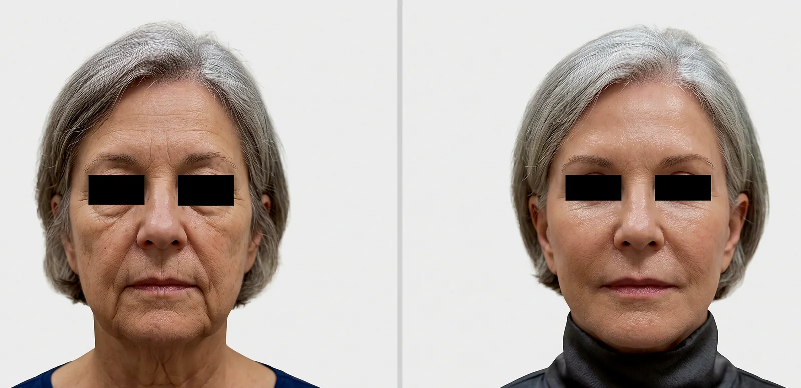
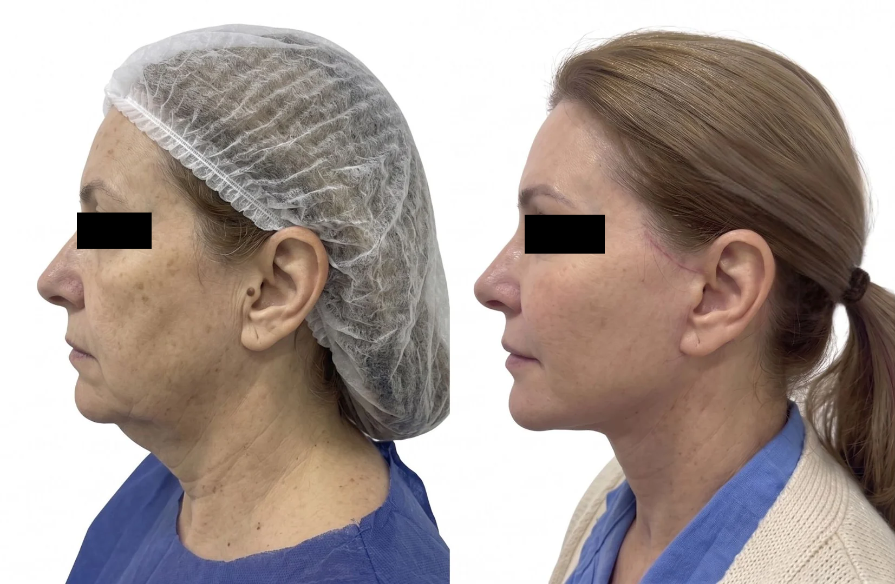
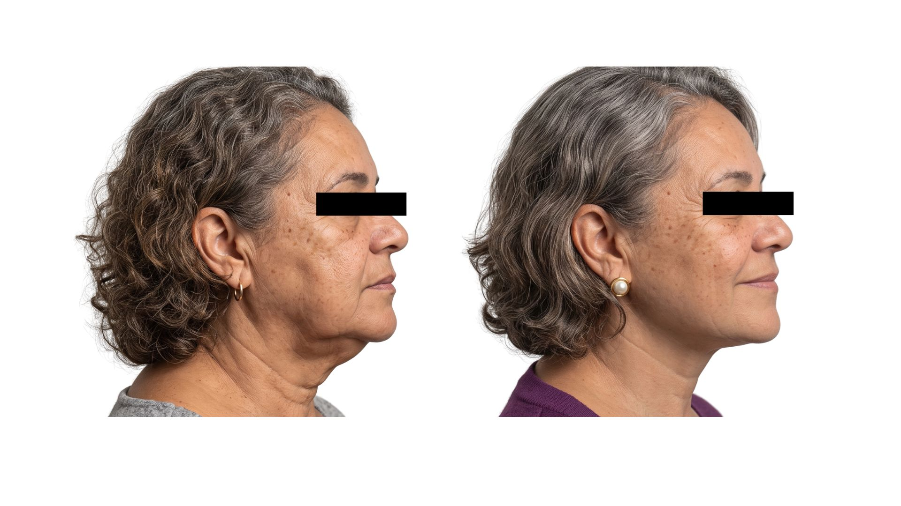

“Bochecha de buldogue”
Pode estar relacionada à descida dos tecidos e à perda de definição entre a bochecha e a mandíbula. Flacidez, volumes e pescoço precisam ser examinados em conjunto.
Quando a queda das bochechas e a perda da definição da mandíbula refletem a descida dos tecidos, o lifting facial pode reposicionar estruturas e recuperar a harmonia entre face e pescoço. O plano depende da anatomia, dos objetivos e da avaliação individual.
Dra. Amanda Schroeder · Cirurgia Plástica · CRM-SP 191605 · RQE 110472 · Pinheiros
Consulta particular em Pinheiros · Nota fiscal para solicitação de reembolso

O nome dado à queixa inicia a conversa. A avaliação traduz essas percepções em alterações anatômicas antes de confirmar qualquer técnica.
Pode estar relacionada à descida dos tecidos e à perda de definição entre a bochecha e a mandíbula. Flacidez, volumes e pescoço precisam ser examinados em conjunto.
Nem sempre representa apenas excesso de pele. Sustentação profunda, distribuição dos volumes e qualidade da pele também participam do contorno.
A queda das bochechas, o aprofundamento dos sulcos e as mudanças ao redor da boca podem alterar a expressão mesmo quando a pessoa não se sente assim.
Pode haver perda de volume, descida dos tecidos ou uma combinação. Reposicionar, recuperar volume e tratar a pele são decisões diferentes.
O planejamento diferencia o que depende de sustentação, volume, pele e continuidade com o pescoço. Por isso, lifting facial não significa apenas “puxar a pele”.
A descida dos tecidos mais profundos pode alterar bochechas, sulcos e linha mandibular.
Perda ou redistribuição de gordura pode produzir aspecto murcho ou acentuar sombras.
Elasticidade, textura, manchas e rugas finas exigem leitura própria e nem sempre melhoram com cirurgia.
A definição da mandíbula depende da transição entre as duas regiões e pode exigir planejamento conjunto.
A resposta depende da estrutura que produz a queixa, do resultado possível e da disposição para uma recuperação cirúrgica.
Se você já considera o lifting facial, a consulta parte dessa hipótese e verifica se ela corresponde à sua anatomia e aos seus objetivos. A técnica é confirmada depois do exame para endereçar sua queixa.
Observe o conjunto: bochechas, mandíbula, pescoço e continuidade dos traços pessoais. Fotografias ajudam a compreender possibilidades, mas não definem indicação.

A fotografia frontal permite observar a relação entre bochechas, mandíbula e pescoço como um conjunto.

O resultado mostra aparência mais descansada e melhor sustentação, sem objetivo de padronizar o rosto.

A vista lateral ajuda a observar face, mandíbula e pescoço no mesmo plano. O momento da fotografia e a cicatrização também fazem parte da evolução individual.

A fotografia de perfil permite observar a continuidade entre o terço inferior da face, a mandíbula e a região cervical.
Casos reais com finalidade educativa; cada anatomia, indicação e evolução é individual, sem garantia de resultado semelhante. Riscos e eventuais revisões são discutidos na consulta.
Casos reais são educativos e não garantem resultado semelhante. Riscos e eventual revisão são avaliados individualmente.
A extensão é definida pelo conjunto anatômico, não por um pacote fixo de técnicas.
Pode reposicionar tecidos e recuperar contornos quando a principal alteração está nas bochechas e no terço inferior.
Pode ser indicado quando a perda da mandíbula e a flacidez cervical participam da mesma queixa.
Pode recuperar volumes selecionados quando reposicionar os tecidos não responde sozinho ao aspecto murcho.
Podem ser mais adequados quando predominam textura, manchas, rugas finas ou alterações leves. Também podem complementar um plano, mas não substituem cirurgia quando a causa principal é estrutural.


O procedimento pesquisado entra na conversa. A técnica é confirmada depois do exame para endereçar sua queixa. Na consulta presencial em Pinheiros, a avaliação organiza indicação, alternativas, cicatrizes, riscos, recuperação e próximos passos.
Recuperação social e recuperação completa não são a mesma coisa. O prazo depende da extensão do plano, de associações e da resposta individual.
Em geral, acompanham a linha do cabelo e os contornos naturais da orelha, podendo seguir para a região posterior. Quando o pescoço exige abordagem adicional, pode haver uma pequena incisão sob o queixo. A posição exata varia conforme o plano.
Edema, equimoses, curativos e necessidade de apoio.
Alguns pacientes retomam atividades sociais leves, conforme a evolução.
Retorno progressivo à rotina, segundo avaliação nos retornos.
Edema residual, sensibilidade e cicatrizes continuam amadurecendo.
Qualidade da pele, genética, tabagismo, medicamentos, associações cirúrgicas, cuidados pós-operatórios e intercorrências podem modificar a evolução. O cronograma é revisto nos retornos.
Seleção adequada, preparo clínico, ambiente hospitalar, anestesia, técnica e acompanhamento fazem parte do mesmo plano.
Histórico de saúde, medicamentos, tabagismo e fatores de risco.
Solicitados conforme idade, condições clínicas e porte do procedimento.
Quando indicados, os procedimentos podem ser programados no Hospital Sírio-Libanês, Hospital Nove de Julho, Hospital Alemão Oswaldo Cruz ou outras instituições criteriosamente selecionadas.
Orientações claras, acompanhamento próximo e canal para dúvidas durante a recuperação.
Dra. Amanda atua com uma equipe cirúrgica organizada conforme o plano, o ambiente escolhido e as necessidades de cada caso.

Quando houver indicação clínica, a avaliação cardiológica pré-operatória pode ser integrada na própria Clínica LIV, facilitando a comunicação entre cirurgia plástica, cardiologia e anestesia.
Relatos reais sobre honestidade, clareza, naturalidade e cuidado próximo.
“Fui com a intenção de realizar um procedimento específico, mas ela me orientou para uma opção mais adequada, respeitando minhas características e particularidades.”Ana Elisa D’AnnibaleAvaliação pública no Google
“Esclareceu todas as minhas dúvidas desde a primeira consulta até o pós-operatório, sempre muito profissional e humana.”Nicoli CadioliAvaliação pública no Google
“Ótima formação profissional, coerência, acolhimento e me passa segurança.”Raphaela GarofoAvaliação pública no Google
Vídeos e leituras para entender indicação, naturalidade e recuperação sem repetir o que já foi apresentado na página.
Indicação, anatomia e objetivos precisam ser compreendidos antes da escolha da técnica.
Reposicionar tecidos e recuperar volume respondem a componentes diferentes do envelhecimento.
Como planejamento, proporção e preservação da identidade entram na conversa.
Conteúdo educativo. Os vídeos não substituem exame físico nem definem indicação individual.
As respostas são referências gerais. Técnica, riscos, anestesia, recuperação e cicatrizes são individualizados após exame.
A consulta diferencia sustentação, volumes, pele e participação do pescoço para organizar indicação, limites, cicatrizes, recuperação e próximos passos.